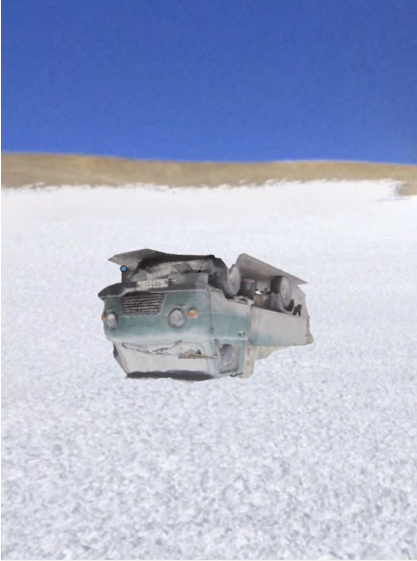

Encounters at the end of the world near the Catholic Chapel at the Argentina Belgrano II Base with all the emotional landscapes that follow
Philosophers often appeal to fictional lands in order to illustrate their concepts. Consider Plato with his Atlantis (Critius, Timaeus), and El Dorado (e.g., Voltaire), and Hyperborea (e.g., Nietzsche). Being a mental experiment or an example akin to a riddle, stories about these lands have become objects of scientific speculation almost as soon as they appear. It is fascinating to look for a land that, according to many sources, existed, even if one has to look tens of thousands of kilometers south of Attica and find Atlantis on white maps of Antarctica. In the project, Atlantis is returned its mental status through the search for its coordinates in virtual space. Putting it in a scene that outwardly resembles Antarctica makes its exploration challenging, but this does not frighten the heroes of the project who have come to these lands: the Philosopher, the Scientist, the Artist, the Director and you. What are they (you, us?) looking for in Atlantis, which mimicry the Antarctica? What does the Philosopher, tired enough of questions of epistemology and honest enough to answer unambiguously to the question of values, feel? What will the Scientist do when he finds his cause for the origin of life on Earth? Why does the Artist want to tear herself to pieces and become the incorporeal corporeality of these lands? Why does the Director so fervently compare the experience of subglacial exploration to the experience of entering the temple? What do you want from this space and these people?“Encounters..”
2022
custom and found photogrametry, 3d sculptures LSHFN
Xeno-digital artist
SPB 2022